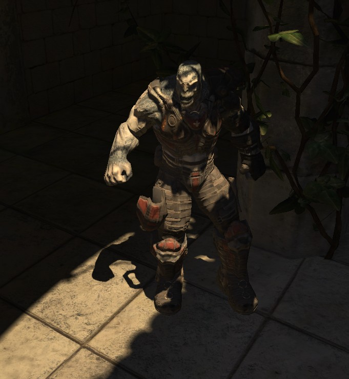

UDN
Search public documentation:
DominantLightsJP
English Translation
中国翻译
한국어
Interested in the Unreal Engine?
Visit the Unreal Technology site.
Looking for jobs and company info?
Check out the Epic games site.
Questions about support via UDN?
Contact the UDN Staff
中国翻译
한국어
Interested in the Unreal Engine?
Visit the Unreal Technology site.
Looking for jobs and company info?
Check out the Epic games site.
Questions about support via UDN?
Contact the UDN Staff
ドミナント ライト
ドキュメントの概要: ドミナントライト アクタの概要と UE3 内での役割の説明。 ドキュメントの変更ログ: Daniel Wright により作成。概要
UE3 に現存するレベルやキャラクターのライティングは非常に汎用的で柔軟性があります。例えばプリミティブに作用する動的ライトまたはシャドウの数にはコード制限がなく、多彩なシャドウイングタイプ (シャドウボリューム、頂点またはテクスチャ単位の事前計算済みシャドウマップ、各種のシャドウマップ フィルタリング) を各種のライトタイプと組み合わせて使用することができます。残念なことに、非常に厳密なライティングシナリオが望ましい場合は (例えば屋外のライティングで、太陽が最重要な光、その次に間接ライティング、空の影響の順に続く場合など)、この汎用性によってパフォーマンスと品質面のコストが上がります。ドミナント (Dominant) ライトは、少数の重要なライトが使われる特別なケースのライティング構成のために存在し、品質およびパフォーマンスの低下を回復させるものです。 注意: Dominant ライトのサポートは、 LightmassJP を使用するレベル内だけに限られています!バージョン
DominantDirectionalLight アクタは、QA_APPROVED_BUILD_JUL_2009 (2009 年 7 月 QA 承認ビルド) で初めて導入されました。DominantPointLight、DominantSpotLight およびすべての dominant ライトに関するキャラクターシャドウイング (プリシャドウ、変調ではなく普通のシャドウ) の改善は、QA_APPROVED_BUILD_AUG_2009 (2009 年 8 月 QA 承認ビルド) で導入されました。関連 TechBlog エントリー
TechBlogJP で、「Character shadowing improvements」 (キャラクターシャドウイングの改善) と「Dominant Directional Light」(ドミナント平行ライト) を検索してください。ライトのタイプ
ドミナントライトには、レベルに配置可能な 3 つのタイプ (DominantDirectionalLight、DominantPointLight および DominentSpotLight) があり、次図に示すように Actor Classes ブラウザで参照できます。
静的な環境に作用するドミナントライト
動的シャドウをシーン全体で用いた場合に発生する多大な GPU コストを回避するため、ドミナント ライトは事前計算済みのシャドウを使用します。トグル可能ライトと同様に、ドミナント ライトによる事前計算済みのシャドウはライトマップとは別に格納され、それにより以下の 2 つの利点がもたらされます。- 動的シャドウイングはドミナントライトだけに影響を与ることができます。ライトマップに格納されるライトはこの方法では影を作ることができず、代わりに 変調シャドウ の影響しか受けません。
- ドミナントライトによる直接シャドウの格納先を特別に指定できます。直接シャドウは最高周波数のライティング情報を有し、他のライティングより高い解像度で保存できます。当社ではシャドウデータにも異なる表現を用いており、現在ドミナントライトタイプには DistanceFieldShadowsJP を使用しています。
- ドミナントライトのシャドウだけ事前計算され、ライトが及ぼす他の影響は動的です。ライトマップに格納されたライトが使用するライトマップスペキュラーとは異なり、ドミナントライトによるスペキュラー (鏡面反射) は動的ライトによるスペキュラーと同じように見え、ライトの減衰により生まれるグラデーションはライトマップ圧縮の影響を受けません。
ライト環境に影響を与えるドミナントライト
ライト環境 は、光線追跡 (ray trace) を用いてキャラクターシャドウイングを求めることで、環境に作用する静的ライトの影響を合成し、2 つの仮想ライトと 1 つの変調シャドウを用いてそれらのライトを表現します。これは、多数の静的な補助光 (fill light) を含むシーンの場合にはうまく機能しますが、太陽光から当然生まれるであろう高周波の環境シャドウを含む、屋外シーンでは悪化します。ドミナントライトはライト環境に合成されず、その代わりに動的ライトとしてライト環境に直接影響を与えます。ライト環境に投影される普通のシャドウは、ドミナントライトがワールドに投影する事前計算済みシャドウとブレンドされます。変調シャドウのような二重の影やジオメトリの通り抜けはありません。もうひとつの利点としては、ライト環境上ではプリシャドウが有効に設定されています。プリシャドウとは、静的環境が環境オブジェクトに投影する動的シャドウで、特にドミナント平行ライトがアクティブなときは、キャラクターにとって視覚的に大切なシャドウです。その理由は、ドミナントライトによって静的環境にくっきりした輪郭の影を形成できるからです。それに対して、既存のライト視認性のトグル機能を使って影を付けている場合は、キャラクターは不自然に見えます。このシーンは、静的環境にドミナント平行ライトを Distance Field (距離場) シャドウと共に表し、ライト環境を使用するキャラクターの上に動的なプリシャドウを投影し、ワールド上にはキャラクターの普通のシャドウを事前計算済みのシャドウとブレンドして投影しています。


制限事項
ドミナントライトは、Distance Field (距離場) シャドウを使用するため、同じ 制限事項 を受けます。ドミナントライトのエラー
複数のドミナント ライトがプリミティブに影響を与えているケース、つまりコンソール上でプリミティブが不正にレンダリングされることを意味する 3 つのインジケータがあります。- マップチェック エラー 「Maps have multiple dominant lights affecting one primitive, these will show up red in lighting complexity and render incorrectly on consoles」(マップ上で複数のドミナントライトが 1 つのプリミティブに影響を与えています。これらのライトは Lighting Complexity (ライティングの複雑度) モードでは赤く示され、コンソール上で正しくレンダリングされません)。
- 各プリミティブのライティング結果のエラー「Object is affected by multiple dominant lights, each primitive can only be affected by one dominant light at most.」(オブジェクトは複数のドミナントライトの影響を受けています。各プリミティブが影響を受けることができるライトの数は最高 1 つです)。[Goto] をクリックすると、問題に該当するプリミティブに移動します。
- ライトの複雑度表示モード では、動的/ドミナントライトを 1 つしか持たないプリミティブはグリーンで示され、2 つのドミナント ライトの影響を受けるプリミティブは次図のようにレッドで示されます。この図では、赤いフロアはドミナント平行ライトと、選択されたドミナントポイント ライトの影響を受けています。